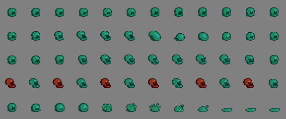
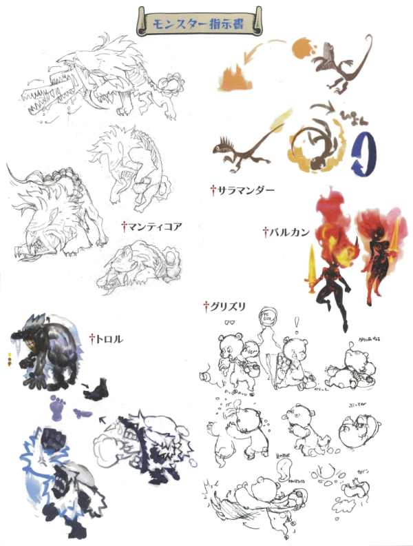
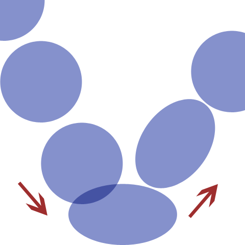
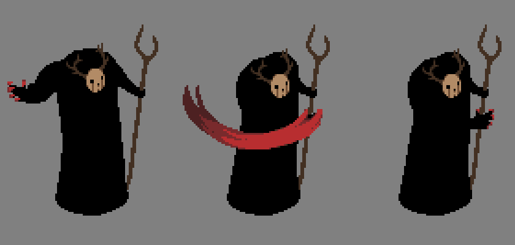

Cours de pixel art 10 : Ça manque d'animation par ici !
Aucun tutoriel sur le pixel art, qui plus est dans le cadre de la création d'un jeu vidéo, ne saurait faire l'impasse sur l'animation, c'est pourquoi nous vous proposons aujourd'hui un article sur le sujet.
Commençons par une rapide explication du principe d'animation tel que nous l'envisagerons ici.
Si vous avez déjà vu une bobine de film, vous n'êtes pas sans savoir qu'elle est composée d'une série d'images fixes affichées très rapidement les unes à la suite des autres (24 images/secondes en général). L'animation en pixel art repose sur ce même principe : l'affichage d'une succession de cadres ou frames, bien que le nombre d'images uniques par seconde soit généralement très inférieur à celui de l'animation classique, résolution oblige.
Je ne parlerai pas de la gestion des frames au sein d'un logiciel ni de leur organisation au sein d'un fichier, puisque cela dépend de la façon dont votre image est lue mais sachez que dans la très grande majorité des cas, les frames sont toutes regroupées en une seule image appelée spritesheet.

Un peu de préparation.
À vos crayons !
Avant d'animer, il est important de savoir à peu près ce que vous voulez obtenir comme résultat. Le plus simple pour cela est de le mettre sur papier : oui, vous allez me le dessiner (n'ayez pas peur, pas besoin d'être bon) ! Bien sûr, il serait absurde de dessiner toutes les frames, mais il est important de visualiser les principaux « points de passages » ou key frames de votre animation, i.e. les étapes-clefs qui définissent votre mouvement, mais également les étapes de mouvements complexes, comme par exemple des transformations ne se situant pas dans le plan de l'image (un personnage de jeu de plate-forme tournant sur lui-même par exemple).
C'est ce qu'on appelle l'animation par parties ou pose to pose animation : on décide d'un certain nombre d'étapes intermédiaires puis on rajoute des frames de transitions entre elles. Dessiner, même de façon sommaire, les key frames vous permettra de mieux visualiser le travail à effectuer et vous aidera grandement au moment de la réalisation de votre sprite.
Prenons un exemple pour clarifier ce propos un peu obscur : un coup d'épée. Celui-ci se découpe comme suit : le personnage est au repos, il arme son coup, frappe puis réarme, ce qui fait un total de 4 « points de passages » à définir pour pouvoir animer votre personnage, le reste des images servant de transition entre ces derniers.

Les références sont vos amies pour la vie.
Si vous n'êtes pas sûr de la façon dont se découpe votre animation, le grand secret de la vie et de la mort consiste à vous documenter, aussi bien du côté animation (regardez ce qui se fait en général) que du coté réalité (rien de mieux que l'observation pour vous débarrasser de vos a priori).
Notez que pour l'animation de personnages, il est possible de mimer soi-même les mouvements, mais cette option est peu recommandée lorsque vous êtes sur votre lieu de travail, ou même en public de manière générale. Normalement, cela devrait suffire à obtenir un découpage satisfaisant de l'animation, mais ne vous inquiétez pas si vous éprouvez quelques difficultés, le coup de main viens avec la pratique, et si possible des critiques constructives.
Un peu de théorie.
Deux, trois généralités.
Rentrons maintenant dans la partie plus technique de cet article, si vous le voulez bien (en fait, vous n'avez pas le choix). Pour que votre animation soit réussie, il est important d'avoir une bonne maîtrise de la répartition du mouvement dans les frames. En effet, le mouvement se définit par la différence de position entre deux représentation d'un même élément d'une frames à l'autre.
De fait, plus vous consacrez de frames à un mouvement, plus il apparaît lent, et inversement, plus vous supprimez de frames intermédiaires, plus il apparaît rapide. La première conséquence logique est que dupliquer une frame permet de marquer une pause dans le mouvement, la seconde est que plus vous chercherez à représenter des mouvements rapides, plus il vous faudra un nombre élevé de frames pour un même intervalle de temps (on peut aussi parler de fréquence d’échantillonnage ou sample rate pour les intimes).
Un peu de dynamisme et de stylisation.
L’élasticité.
Si vous ne vivez pas au sein d'une colonie de golems au fin fond d'une caverne, vous aurez peut-être remarqué qu'il existe des matériaux rigides et d'autres plus élastiques. Ces derniers ont la capacité de se déformer sous l'action des forces qui leurs sont appliquées.
La technique du squash and stretch (compression et étirement) consiste à étirer ou compresser un corps au contact d'un solide, tout en conservant son volume (c'est important). L'exemple le plus flagrant est celui d'un ballon qui rebondit : d'abord sphérique, il s'écrase au moment du contact avec le sol, puis s'étire lorsqu'il rebondit. Ce principe peut se généraliser à de très nombreux mouvements en animation, qu'on anime un visage, un personnage, un objet, etc.

Un rapide aperçu en .gifPlus la compression et l'écrasement sont fort, plus on obtient un effet « toon ». Ce principe permet de fluidifier les actions et de leur donner plus de force.
Inertie et cinétique.
N'ayez pas peur, je ne vais pas vous faire un cours de physique ! oubliez vos cours, nous n'allons ici nous intéresser qu'à certains effets physiques utiles à l'animation, à savoir qu'un corps en mouvement tend à le rester et qu'il en va de même pour un corps immobile. Trois effets en découlent :
La continuité du mouvement.
La continuité du mouvement (ou follow through) a pour conséquence que lorsqu'un corps non rigide s'arrête, ses parties restent en mouvement quelques instants avant de s’arrêter à leur tour. On peut constater ce phénomène de façon très simple : faites quelques pas puis arrêtez-vous. À moins d'avoir tout le haut du corps dans le plâtre, vos bras ne deviendront pas absolument immobiles à la seconde où vous arrêterez d'avancer : leur mouvement continuera quelques instants à cause de l'énergie cinétique accumulée puis ils s’arrêteront de bouger à leur tour.
L'effet de traction.
L'effet de traction (ou drag) est très proche de la continuité du mouvement : c'est plus précisément son inverse. L'effet de traction peut s'observer lorsqu'on exerce une force sur un corps souple, par exemple du tissu. L'ensemble du corps ne se mettra pas en mouvement simultanément si vous tirez dessus : viendra d'abord la partie que vous tirez, puis le reste, du point de traction jusqu'aux extrémités.
Le chevauchement de mouvements.
Le chevauchement de mouvements (overlapping action) est le résultat de l'action conjuguée des deux phénomènes précédents. Lorsqu'un corps passe d'un mouvement A à un mouvement B, il y a un instant ou les deux mouvements se « chevauchent » : la partie à l'origine du mouvement B se déplace en accord avec ce dernier mais le reste du corps, en raison du drag, continue encore à suivre le mouvement A. Il y a donc coexistence de deux mouvements possiblement antagonistes jusqu'à ce que l'ensemble du corps suive le mouvement B. Comme expliqué précédemment, la transition de mouvement se fait progressivement de la partie à l'origine du mouvement vers le reste du corps.
Les phases de transition.
Vous pensiez que c'en était fini de l'inertie ? Que nenni mes braves : en revoilà ! Tout corps qui se déplace, à moins qu'il ne reçoive ou ne transfère brutalement une quantité d'énergie cinétique importante, passe par un régime appelé transitoire en début et en fin de mouvement. Concrètement, cela signifie que le corps à besoin d’accélérer lorsqu'un mouvement est initié, et qu'il lui faut ensuite décélérer avant de s’arrêter. Ces phases de transition, en plus de rendre votre animation plus crédible, permet de véhiculer des informations supplémentaires au joueur. Par exemple, une lente accélération et/ou une tout aussi lente décélération indiquent que l'objet qui se déplace est lourd : pensez à une masse par exemple, c'est une arme lente, mais une fois le coup parti, il est très difficile à arrêter (les marteaux et les grandes épées de Monster Hunter en sont un bon exemple).
Pour se la péter dans les dîners mondains (suite) : le motion blur.
Le motion blur, ou flou cinétique pour ceux qui sont fâchés avec Shakespeare et ses copains, est un phénomène optique avec lequel nous vivons tous les jours : lors de l'observation d'un mouvement rapide, on peut voir une traînée floue derrière le corps en mouvement. Cette traînée est en fait due à la persistance rétinienne et n'est qu'une illusion d'optique. Ça vous fait une belle jambe ? Et pourtant c'est un principe trèèès utile pour l'animation.
Lors d'un mouvement très rapide, il y a un déplacement important qui s'effectue d'une frame à une autre, ce qui risque de rendre votre animation peu compréhensible par le spectateur, et ce risque augmente proportionnellement à la complexité de la trajectoire suivie.
Alors comment faire pour conjuguer mouvement rapide et animation compréhensible ? Une idée ? Si vous avez répondu « Le motion blur ! », on va peut être faire quelque chose de vous, sinon retournez à la case départ.

Pour réussir un motion blur, le mieux est souvent… de ne pas s'en préoccuper ! En effet, le motion blur vient après le découpage de votre animation et la réalisation de vos frames. L'idéal est de réaliser vos animations en notant les frames nécessitant du motion blur, puis de revenir les travailler après coup. Si vous utilisez un logiciel gérant les calques (ce que toute l'équipe vous recommande très fort), tracez la trajectoire suivie par l'élément en mouvement d'une frame à l'autre sur un calque à part, elle vous servira de base pour la réalisation du motion blur. Et ensuite ? Eh bien, il ne reste plus qu'à suivre quelques règles :
- La « traînée » est comprise entre la position de départ et celle d'arrivée, et suit la trajectoire de votre mouvement.
- Plus un mouvement est rapide, plus la « traînée » est longue.
- Considérez votre traînée comme un solide, les règles de perspectives et autres s'y appliquent normalement.
- Vous pouvez utiliser un dégradé pour accentuer l'effet de flou.
Protips.
Commencer simple.
Si vous commencez par faire des frames hyper complexes avec un éclairage à sources multiples, ambient lighting et tout le fatras, vous allez pleurer à chaudes larmes le jour où vous vous rendrez compte que vous avez raté votre animation. Commencez par faire des formes à base d’à-plats de couleur pour animer rapidement. Une fois que l'animation vous satisfait, augmentez le niveau de détail progressivement en vérifiant à chaque fois que le résultat est conforme à vos attentes.
Animer séparément les différentes parties.
Travaillez avec des calques. Sérieusement. Il est infiniment plus facile de modifier une animation dont les éléments sont sur calques séparés. L'idéal serait de créer un calque par élément si vous n’êtes pas sûr de vous. Notez également que certaines animations ne reposent que sur le déplacement de certains éléments les uns par rapport aux autres, sans déformation quelconque.
Prendre l'animation comme un « tout ».
Lorsque vous travaillez sur une animation, quelle qu'elle soit, vous travaillez sur un ensemble de frames successives. L'important est que votre animation soit réussie, pas que chaque frame individuelle soit un chef-d’œuvre irréprochable sur lequel vous avez passé une demi-éternité.
Non seulement garder ceci à l'esprit vous permettra d'éviter une importante perte de temps et d'énergie, mais cela vous permettra également de faire gagner en qualité votre travail. En effet, que chaque frame prise à part soit une réussite ne vous garantira pas que votre animation sera bonne, puisque, bien au contraire, les frames de transitions auront très souvent l'air « moche ».
C'est un fait inévitable. Il suffit de regarder un quelconque court ou long-métrage d'animation et de mettre en pause aléatoirement pendant que les personnages changent de pose. La probabilité qu'ils aient l'air ridicule est très élevée, et pourtant l'animation dans son ensemble est de bonne qualité.
La force des détails.
La différence entre une bonne animation et une très bonne animation réside (entre autres) dans le soin apporté aux détails ou actions secondaires. Ces actions secondaires ont pour rôle principal d'asseoir l'animation principale, de la rendre plus vivante et de lui donner plus de force. Par exemple, lorsqu'un personnage se déplace et qu'il porte une cape et/ou a des cheveux longs, ceux-ci ne sont pas statiques : il réagissent à l'action principale, ici la marche. Il est cependant important de hiérarchiser les différentes actions, de manière à ce que l'action principale soit clairement identifiable : si ce n'est pas le cas, tout le travail réalisé sur les animations secondaires ne fera que desservir l'action dans son ensemble.
Et maintenant bavez un peu devant ce que font les grands !
Et pleurez un coup au passage, ça vous fera du bien.
- How to Make Her Turn, par Syosa
- Maska, par KO-KI
- Arrgh, I guess, par le très grand fool
Ajouter un commentaire
Commentaires

merci pour ce cours génial et très complet
Bravo pour ce superbe tuto, probablement l'un des plus clairs, bien écrits et intéressants qu'il m'ait été donné de lire !
Effectivement. Ca fait du bien de verser sa petite larme.
Merci pour ce super tuto !
super tutoriel
très intéressant et très agréable à lire, franchement merci!

Merci pour ce tuto, j'ai beaucoup appris! Merci encore pour vos "cours"!